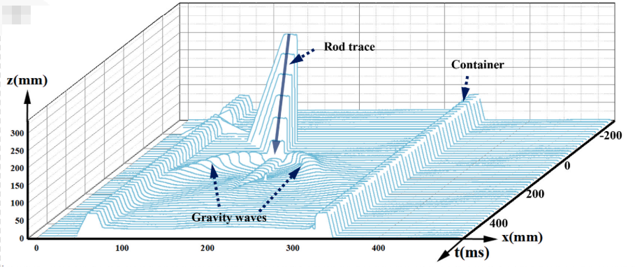
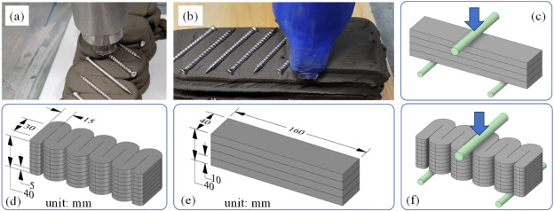
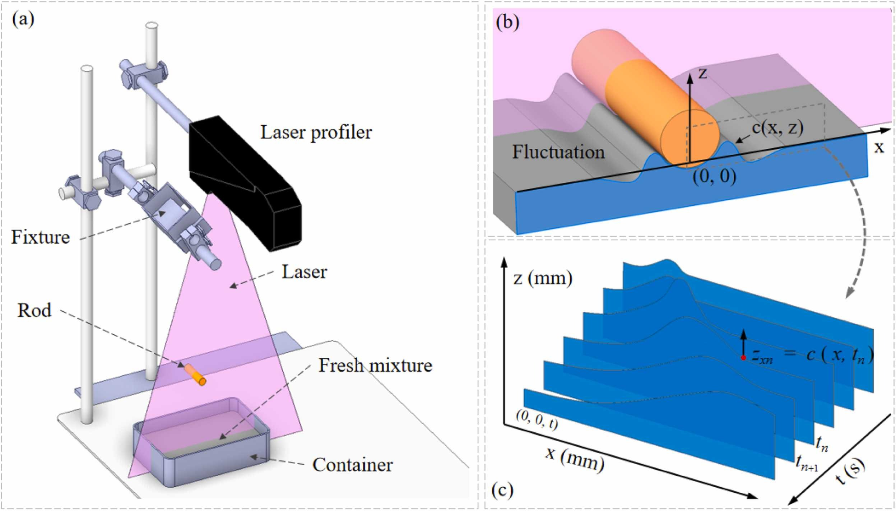
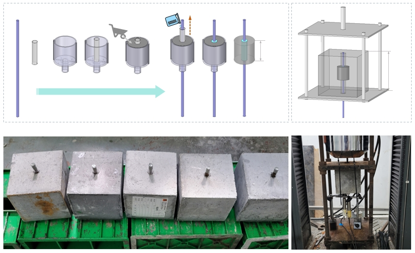
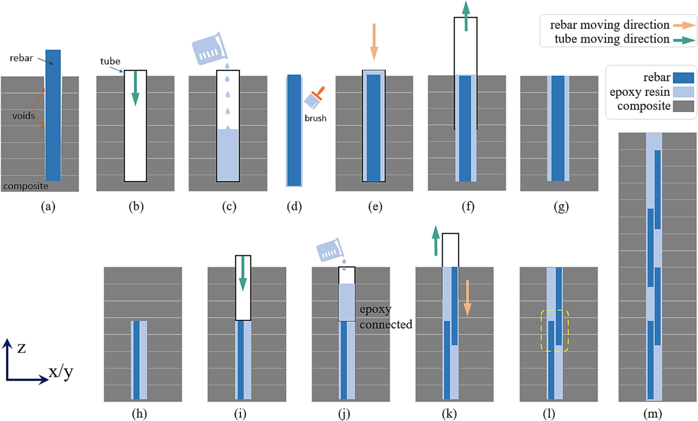
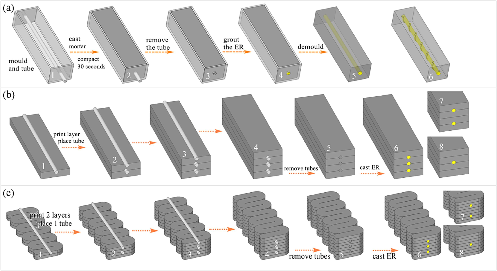

Research Interests
1Non-contact Perception for Construction Materials
- Non-contact Rheology Measurement;
- Visual Perception for Embodied Intelligence;
2Concrete 3D Printing
- Reinforcement Technology;
- Interface Repair;
Publications
2026

2025

2024


2023


2022
Early
- Cui, H., Yu, S., X. CAO & Yang, H. Evaluation of printability and thermal properties of 3D printed concrete mixed with phase change materials. Energies 15, 1978 (2022).
- Cui, H., X. CAO et al. Experimental study of 3D concrete printing configurations based on the buildability evaluation. Applied Sciences 12, 2939 (2022).
- X. CAO, Yu, S., Zheng, D. & Cui, H. Nail planting to enhance the interface bonding strength in 3D printed concrete. Automation in Construction 141, 104392 (2022).
- X. CAO, Yu, S., Cui, H. & Li, Z. 3D printing devices and reinforcing techniques for extruded cement-based materials: a review. Buildings 12, 453 (2022).
- X. CAO, Yu, S. & Cui, H. Experimental investigation on inner-and inter-strip reinforcements for 3D printed concrete via automatic staple inserting technique. Applied Sciences 12, 2099 (2022).
- X. CAO & Li, Z. in 3D Concrete Printing Technology 211-222 (Elsevier, 2019).
- Fu, Y. C., X. CAO & Li, Z. Printability of magnesium potassium phosphate cement with different mixing proportion for repairing concrete structures in severe environment. Key Engineering Materials 711, 989-995 (2016).